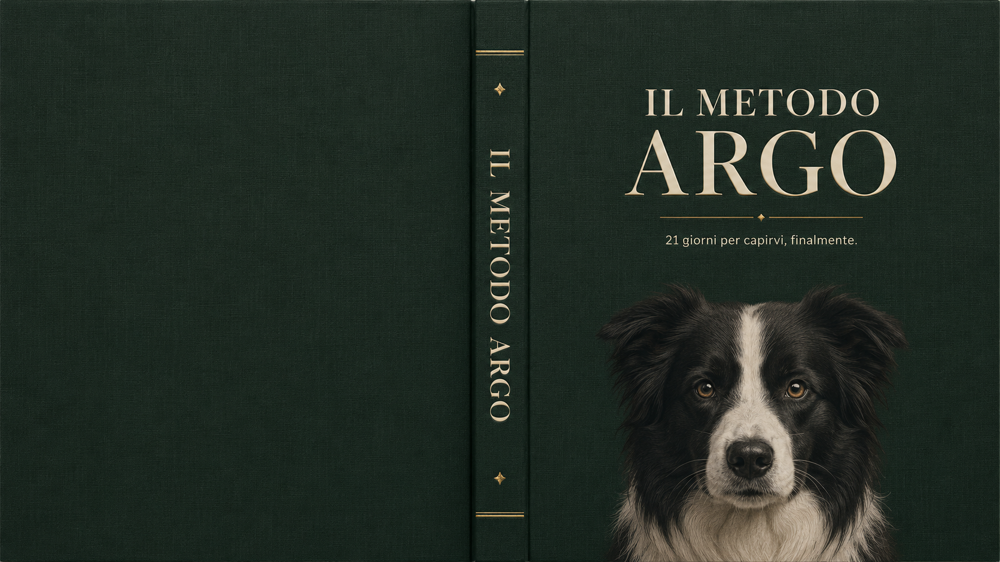

Direzione ufficiale della copertina. Tela verde bosco, titolo in foil oro/crema con serif maiuscolo, ritratto realistico di Argo che entra dal bordo basso, dorso rilegato con dettagli oro. Coerente col sistema: bosco + foil (l'accento materico delle pagine scure) + fotografia integrata. Da ricostruire in codice per il PDF con tipografia vera (Fraunces) — l'immagine è la reference, non l'esecuzione finale.